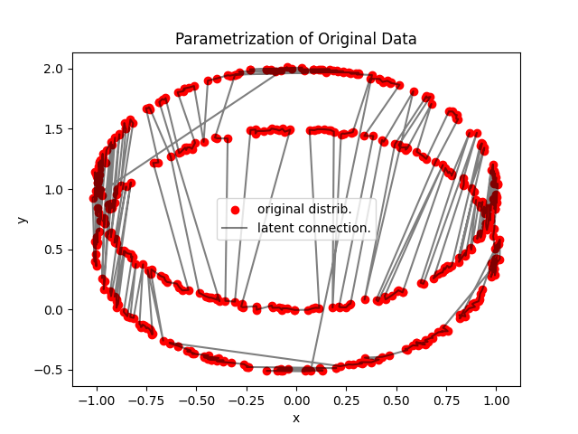

Note
Go to the end to download the full example code.
5.7. Conditional Sampling
In this tutorial, we introduce the problem of conditional sampling, i.e., generating samples from a distribution ( p(y|x) ) using kernel-based models.
We’ll use the classic Iris dataset to demonstrate two approaches: - Nadaraya-Watson Estimator - Optimal Transport-based Conditioner
- 
import numpy as np
import pandas as pd
from codpy import conditioning
import codpy.core
from codpy.kernel import Sampler
from codpy.core import get_matrix
from codpy.plot_utils import multi_plot,plot1D
import matplotlib.pyplot as plt
from codpy.data_processing import hot_encoder,simple_hot_encoder
def sphere_sampling(center, radius, size, epsilon=0.01):
from numpy import linalg as la
samples = np.random.normal(size=size)
noise = np.random.normal(size=size) * epsilon
for n in range(samples.shape[0]):
samples[n] *= radius / la.norm(samples[n])
samples += noise
samples += center
return samples
def generate_sphere_data(N=500, D=2, centers=[[0, 1], [0, 0.5]], radius=1.0):
num_clusters = len(centers)
samples_list = []
labels = []
for idx, center in enumerate(centers):
size = (N // num_clusters, D)
samples = sphere_sampling(center=np.array(center), radius=radius, size=size)
samples_list.append(samples)
labels.extend([idx] * (N // num_clusters))
X = np.vstack(samples_list)
df = pd.DataFrame(X, columns=[f"dim_{i}" for i in range(D)])
labels = pd.Series(labels, name="label")
return df, labels
def scatter_plot_multiple(dfs, titles, figsize=(14, 3.5)):
"""
Plots a row of scatter plots, with special label visualization for latent variables.
"""
fig, axes = plt.subplots(1, len(dfs), figsize=figsize)
if len(dfs) == 1:
axes = [axes]
for ax, df, title in zip(axes, dfs, titles):
if title == "Latent Representation":
ax.scatter(df["dim_1"].values, df["label"], c=df["label"], cmap="viridis", s=10)
ax.set_ylabel("Label values")
ax.set_xlabel("Latent values")
# # Show label predictions as a 1D classification result
# ax.scatter(df["dim_0"], df["dim_1"], c=df["label"], cmap="viridis", s=10)
# # plot1D(df.values[:,[1,0]].T)
# ax.set_ylabel("Predicted Label")
# ax.set_xlabel("Sample Index")
else:
sc = ax.scatter(
df["dim_0"],
df["dim_1"],
c=df["label"],
cmap="viridis",
alpha=0.6,
edgecolor="k",
linewidth=0.2,
)
ax.set_xlabel("dim_0")
ax.set_ylabel("dim_1")
# Optional: show color bar
cbar = plt.colorbar(sc, ax=ax, shrink=0.75)
cbar.set_label("Label")
ax.set_title(title, fontsize=10)
plt.tight_layout()
plt.show()
class CircleConditionner(conditioning.ConditionerKernel):
def __init__(
self,
x,
**kwargs,
):
"""
CircleConditionner is a specific implementation of ConditionerKernel that generates samples
from a normal distribution conditioned on a circle in the latent space.
Parameters:
x (pd.DataFrame): Input data for conditioning.
**kwargs: Additional keyword arguments for ConditionerKernel.
"""
latent_dim_y = 1
x = hot_encoder(pd.DataFrame(x),cat_cols_include={0})
super().__init__(
x=x,
latent_generator_x=None,
latent_generator_y=None,
latent_dim_y=latent_dim_y,
**kwargs,
)
def sample(self, x, n, **kwargs):
"""
Sample from the conditioned distribution.
Parameters:
x (pd.DataFrame): Input data for conditioning.
n (int): Number of samples to generate.
**kwargs: Additional keyword arguments.
Returns:
np.ndarray: Generated samples.
"""
# Generate samples from the latent space
# Map latent samples to the original space
x = simple_hot_encoder(x, num_classes=2)
return super().sample(x=x,n=n,**kwargs)
def sample_and_plot(samplers, N=500):
"""
Sample conditionally using provided samplers and plot marginals.
"""
y_df, y_labels = generate_sphere_data(
N=500, D=2, centers=[[0, 1], [0, 0.5]], radius=1.0
)
y = y_df.values
labels = y_labels.values
results = []
for SamplerClass in samplers:
# TODO: remove once conditionner fixed
# SamplerClass.sample = dummy_sampler
# Initialize and sample
model = SamplerClass(x=labels, y=y)
# Here should we use different x? How do we chose?
x = y_labels
sampled = model.sample(x=get_matrix(0.), n=N//2, distance=None).squeeze()
sampled = np.concatenate([sampled,model.sample(x=get_matrix(1.), n=N//2).squeeze()])
sampler = model.sampler_y
plt.scatter(sampler.get_fx()[:, 0], sampler.get_fx()[:, 1], color='red', label="original distrib.")
plt.plot(sampler.get_fx()[:, 0], sampler.get_fx()[:, 1], alpha=0.5,color='black', label="latent connection.")
plt.ylabel("y")
plt.xlabel("x")
plt.title("Parametrization of Original Data")
plt.legend()
# Latent
latent_xy = model.latent_xy
latent = pd.DataFrame(
latent_xy[:,[0,2]], columns=[f"dim_{i}" for i in range(y.shape[1])]
)
latent["label"] = latent_xy[:, 0]
# Reconstructed
recon = model.sampler_xy(latent_xy)
xy_recon = pd.DataFrame(recon[:,2:], columns=[f"dim_{i}" for i in range(y.shape[1])])
xy_recon["label"] = recon[:,0]
# New generated samples
variate = pd.DataFrame(
sampled, columns=[f"dim_{i}" for i in range(y.shape[1])]
)
# Attach labels
variate["label"] = x
original = y_df.copy()
original["label"] = labels
scatter_plot_multiple(
[original, latent, xy_recon, variate],
titles=[
"Original Data",
"Latent Representation",
"Reconstructed",
"Generated Samples",
],
)
# codpy.core.KerInterface.set_verbose()
# test = Sampler(x=np.random.normal(size=[10,1]))
# plt.plot(test.x,test.fx,'o')
sample_and_plot(
samplers=[
CircleConditionner,
]
)
plt.show()
pass
Total running time of the script: (0 minutes 1.747 seconds)